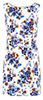

Tables symples
Таблиця з відокремленими рядками
Таблицы с промежутками между строк помогают сконцентрироваться на связанной информации, расположенной в этой же
строке таблицы, но в соседних ячейках. Для того, чтобы отделить текст от картинки, помещаем его в другую ячейку,
объединив при этом две ячейки в заголовке таблицы ('th' colspan="2" Модель '/th'), а правую границу между ячейками
убираем.
| Модель |
Ціна |
Кількість |
Загалом (грн) |
|  |
Плаття з квітковим друком |
2500 |
1 |
2500 |
|
Плаття з боковими вставками |
3000 |
1 |
3000 |
Таблиця-календар
| My working weeks, March 2015 |
| Monday |
Tuesday |
Wednesday |
Thursday |
Friday |
| 2 |
3 |
4 |
5 |
6 |
| 9 |
10 |
11 |
12 |
13 |
| 16 |
17 |
18 |
19 |
20 |
| 23 |
24 |
25 |
26 |
27 |
| 30 |
31 |
|